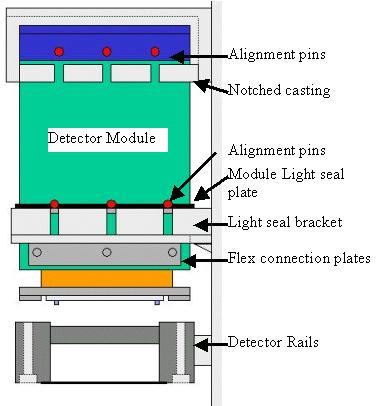

The Detector light seal brackets must be between the module flex connection plates and module light seal plate as shown in Illustration 12 to allow module to slide into detector.
Illustration 12: Module Structure
